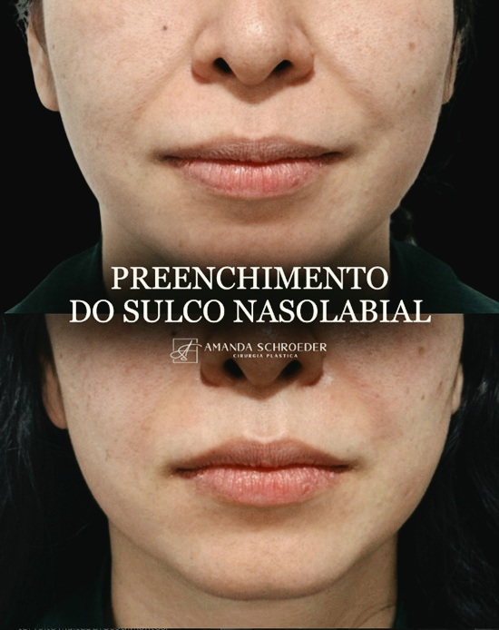

“Recomendo muitíssimo... minha mãe e meu pai amaram o atendimento.”Thaïs Chauvell
Lifting facial em Pinheiros
Lifting facial para parecer mais descansada, sem perder sua expressão.
A avaliação diferencia flacidez, volume, pele e pescoço para definir se o lifting faz sentido, qual extensão é segura e como preservar identidade, cicatrizes discretas e naturalidade.
Atendimento na Clínica LIV Faria Lima, em Pinheiros. Consulta presencial e teleconsulta em casos selecionados.

MédicaDra. Amanda Schroeder
RegistroCRM-SP 191605 · RQE 110472
FormaçãoUNICAMP · HC-UNICAMP · Einstein
LocalizaçãoPinheiros · perto da Faria Lima
Avaliações no Google
★★★★★
Depoimentos destacam acolhimento, competência técnica e cuidado humano.
“Grande conhecimento técnico, atencioso e empático durante a consulta.”Marina Silva
“Experiência, profissionalismo e um acolhimento humano que faz toda a diferença.”Raphaela Garofo
Indicação
Quando o envelhecimento pede uma abordagem estrutural.
O lifting pode ser considerado quando a queixa envolve queda dos tecidos, perda do contorno facial e alterações do pescoço. A decisão depende do exame da face como conjunto — não apenas da vontade de “esticar” a pele.
Terço médio e inferior
Queda de bochechas, perda de contorno e marcas relacionadas à flacidez.
Naturalidade
O objetivo não é esticar o rosto, mas reposicionar estruturas com equilíbrio.
Associações
Blefaroplastia, lip lifting, laser ou tratamento do pescoço podem ser discutidos quando fizer sentido.
Quando pode não ser indicado
Lifting não é a resposta para toda queixa facial.
Quando a queixa principal é mancha, textura de pele, rugas finas isoladas ou perda de volume sem flacidez relevante, procedimentos de pele ou estética podem ser mais adequados que cirurgia.

Consulta presencial1 2 3 4
O que será decidido na consulta.
A consulta organiza indicação, técnica, cicatrizes, associações possíveis, recuperação e preparo clínico. O objetivo é entender se o lifting é o melhor caminho ou se há alternativas mais adequadas para aquele momento.
Análise facial
Flacidez, volume, pele e proporções.
Estratégia
Definição do que tratar e do que evitar.
Segurança
Exames, preparo e avaliação clínica.
Recuperação
Rotina, afastamento e acompanhamento.
IndicaçãoSe lifting é proporcional ao seu caso.
AlternativasProcedimentos associados ou não cirúrgicos.
RecuperaçãoTempo social, edema e cuidados.
Próximos passosExames, orçamento e preparo.
Quem conduz sua avaliação
Conhecer a abordagem
Dra. Amanda Schroeder, cirurgiã plástica.
Cirurgiã plástica, CRM-SP 191605 e RQE 110472, com formação pela UNICAMP, a Dra. Amanda avalia face, olhar e pescoço como conjunto. A indicação considera anatomia, expressão, pele, cicatrizes possíveis e expectativas reais — para decidir com critério o que operar, tratar de forma complementar ou acompanhar.
Clínica LIV Faria Lima
Como chegarAtendimento em Pinheiros, com privacidade e jornada organizada.
As consultas acontecem na Clínica LIV Faria Lima, em Pinheiros, próxima à Estação Pinheiros do metrô e com estacionamento pago no local. O atendimento prioriza privacidade, clareza dos próximos passos e preparo clínico integrado quando indicado.
Segurança pré-operatória
Entender preparoAvaliação clínica integrada ao preparo cirúrgico.
Para cirurgias realizadas pela clínica, a avaliação cardiológica pré-operatória pode integrar o protocolo de segurança da LIV, conforme o planejamento e a avaliação clínica.
Expectativa realista
O resultado amadurece com o tempo.
Edema, roxos e sensação de repuxamento podem ocorrer no início. A melhora evolui progressivamente, e a indicação correta é mais importante do que prometer grandes transformações.

Planejamento cirúrgico
Cada caso exige definição de técnica, cicatrizes, associações e cuidados pós-operatórios.

Face como conjunto
Imagem educativa de harmonia facial. Não representa promessa de resultado de lifting.
Resultados variam conforme anatomia, técnica, cicatrização e cuidados. Não há promessa de resultado individual.
Conteúdos da Dra. Amanda
Conteúdos para entender lifting facial sem exageros.
Materiais que mostram indicação, naturalidade, medo de artificialidade e relação entre face, pescoço e recuperação.
Dra. Amanda falando sobre lifting
Vídeo central para entender o tom da abordagem em rejuvenescimento facial.
Reel no InstagramLifting facial em vídeo
Conteúdo direto sobre rejuvenescimento com naturalidade.
Post no InstagramIndicação de liftingAjuda a diferenciar flacidez de outras queixas faciais.
Post no InstagramPlanejamento facialMostra a importância de analisar o rosto como conjunto.
Post no InstagramMedo de resultado artificialFala com uma das principais objeções da paciente.
Post no InstagramExpectativas no liftingReforça limites e maturação do resultado.
Reel no InstagramLifting e naturalidadeMais um conteúdo em vídeo para quem quer sentir a linguagem da médica.
Os conteúdos do Instagram complementam a orientação, mas não substituem consulta médica presencial. Alguns vídeos podem abrir controles próprios do Instagram conforme o navegador.
FAQ
Dúvidas frequentes sobre lifting facial.
Lifting facial deixa o rosto artificial?
O objetivo é reposicionar tecidos e melhorar sustentação preservando identidade e expressão. A artificialidade é justamente um ponto evitado no planejamento.
Lifting trata rugas finas e manchas?
Não é o foco. Rugas finas, textura e manchas podem exigir tratamentos de pele associados ou em outro momento.
Quando lifting é melhor que preenchimento?
Quando a queixa principal é flacidez e queda dos tecidos, reposicionar estruturas pode fazer mais sentido do que apenas preencher volume.
Preciso tratar o pescoço junto?
Nem sempre, mas face e pescoço precisam ser avaliados em conjunto para evitar desarmonia.
Quanto tempo leva a recuperação social?
Depende da extensão, associações e cicatrização. O retorno social é progressivo e deve ser planejado com antecedência.
Primeiro contato
Como funciona ao solicitar uma avaliação.
Ao enviar uma mensagem, a equipe entende o que você deseja avaliar, orienta o melhor formato de consulta e informa disponibilidade, valores, nota fiscal e próximos passos com discrição e clareza.
Você conta o que deseja avaliar
A equipe entende sua queixa, sua prioridade e o procedimento de interesse.
A equipe orienta o caminho
Você recebe informações sobre consulta presencial, teleconsulta inicial em casos selecionados, agenda e valores.
A avaliação define a indicação
Na consulta, a Dra. Amanda avalia técnica, limites, segurança, recuperação e próximos passos.
Quer saber se o lifting facial faz sentido para você?
Envie uma mensagem para contar o que incomoda na face ou no pescoço e receber orientação sobre consulta, disponibilidade, valores e próximos passos.